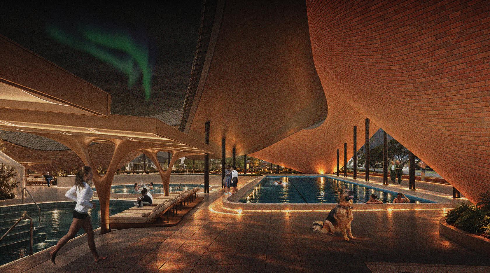
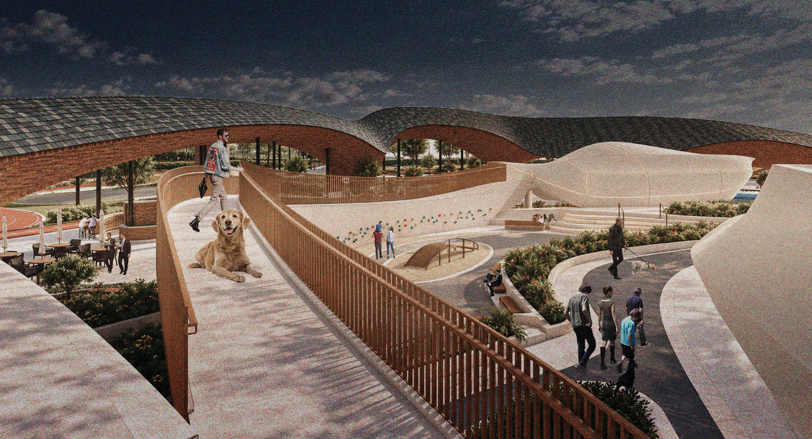
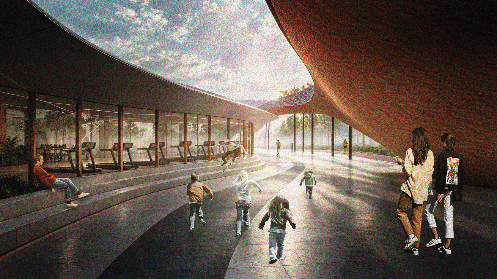
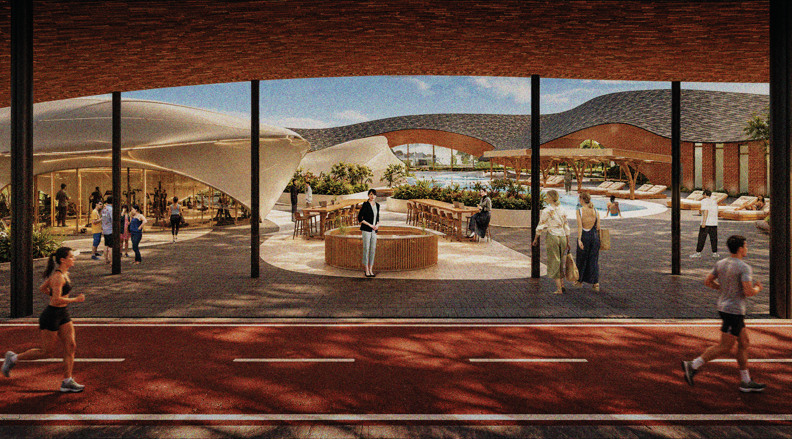
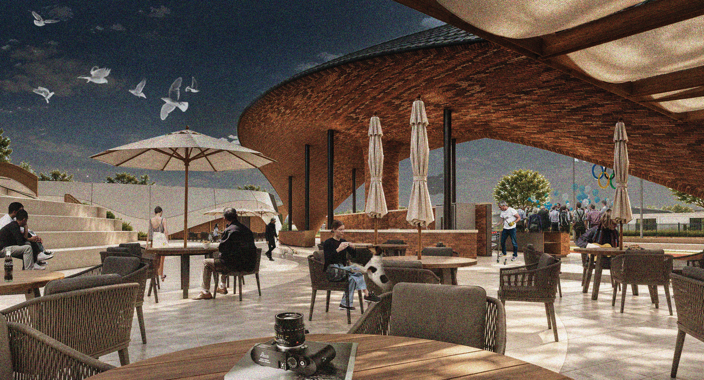

The Urban Playground
A destination for everyday public life.






A destination for everyday public life.
A public recreation landscape that brings swimming, exercise, performance and informal gathering into one connected place. The proposal asks how a destination park can sit within Melbourne's network of local parks and bring different neighbourhoods together.
Give the former Olympic recreation setting a wider civic role while retaining the everyday activities that make it useful locally.
One landscape.
Many ways to meet.
Connect distinct activities through a shared public route, then use changes in roof and ground to create different places to gather.
Week 15 park-network studies, programme map, movement study, site plan, sections and occupied-space views.
The drawing room.
Plans and sections reveal
what an image can't.
Original annotated drawing / not to scale.
Original sections explain the changing levels and canopy.
The source explicitly translates a tennis racket into the kiosk canopy and branching support.
From the inside.
Material, light and the
scale of occupation.
Project context and image notes
Academic major project / RMIT. New schematic explanation of the Week 15 proposal. It describes design logic, not measured performance or a sequence of rejected options.
The six perspective views are original project renders, presented in their original colours and proportions. Original drawings remain the reference for dimensions, labels and geometry.